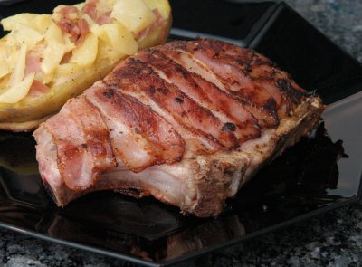

| Zutaten für 4 Personen: | |
| 4 | grosse, dick geschnittene Schweinskoteletts |
| 1 | Zwiebel |
| 1 El | Bratbutter |
| 1 | Apfel |
| 200 g | Appenzeller Käse |
| 1 Prise | Cayennepfeffer |
| Salz | |
| 8 Tranchen | Bratspeck |
| schwarzer Pfeffer aus der Mühle | |
| Bratbutter zum Braten | |
Mit einem scharfen Messer in jedes Kotelett eine grosse Tasche zum Füllen schneiden (eventuell vom Metzger machen lassen).
Die Zwiebel schälen und sehr fein hacken. In der Bratbutter kurz andünsten, dann auskühlen lassen.
Den Apfel schälen. Apfel und Käse fein reiben.
Beides zusammen mit der Zwiebel mischen und die Masse mit Cayennepfeffer und etwas Salz würzen.
Die Käsemasse in die Koteletts füllen und diese mit jeweils 2 Specktranchen satt umwickeln, damit der Käse beim braten nicht ausläuft. Eventuell mit Zahnstocher verschliessen.
Die Koteletts rundum mit Salz und Pfeffer würzen. In reichlich Bratbutter zuerst auf grossem Feuer 1 1/2 Minuten anbraten, dann auf mittlerer bis kleiner Hitze auf jeder Seite je 6-8 Minuten fertig braten.
Dazu passen Bratkartoffeln oder ein Kartoffelsalat.
Werbebroschüre für Appenzeller Käse, 2005
Schmeckte am 4.2.2008 ausgezeichnet. Ist allerdings bestimmt nichts für die Linie. RE